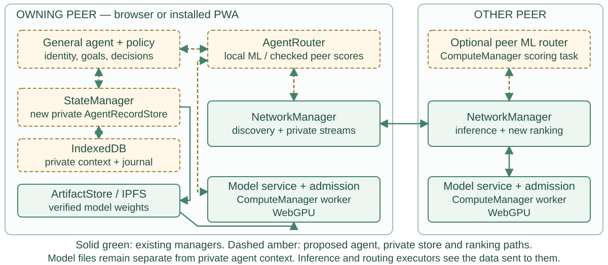
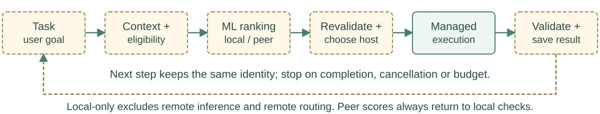

PEERCOMPUTE / PLANNED NEXT STEPS / 05 NOVEMBER 2026
One general agent on PeerCompute
Spawn a general agent with a name, goals and persistent context. The same agent can reason, write code, understand images and generate images by selecting eligible models. Multiple instances keep separate identities. Dedicated agent types and new speech/3D adapters are future work.
1 · Where the agent runs and remembers

The agent runtime is proposed. Existing managers provide the foundation; the private agent store and ranking protocol are new additions.
2 · How a request becomes a saved result

A small learned scorer ranks task–model pairs using measured quality, latency and availability. Train and evaluate it on versioned outcomes. Routing can run locally or optionally on a peer, with a local fallback. The owning host enforces permissions and chooses the provider; the model or router never becomes the agent's owner.
Persistence, consent and continuity
Commit identity, goals, context and results to private IndexedDB. Keep model weights in ArtifactStore. Local-only prohibits remote inference, routing and automatic context transfer; public weight downloads are a separate choice. Model loading and guest-agent hosting require separate host opt-ins.
Migration transfers one identity only after durable source relinquishment. Cloning creates a new identity with selected memories. Both require destination consent. Private context is not automatically published over IPFS, and saved state does not keep a closed browser running.
Next: MODEL-BROWSER-01 — wider Hugging Face discovery. Then: AGENT-01 — one general agent, persistence, trained routing, optional peer routing, consented model loading, cloning and migration. Learned embodiment follows in Humunculus.